A school pickup queue and verification system for Pakistani schools. Rotating cryptographic codes, verified offline at the gate, with a manual fallback that never turns a family away.
There is no record of who a family actually permits to collect their child. A guard works from memory across hundreds of families, and has no way to verify a stranger standing in front of him.
If the wrong person collects a child — or the right person is an hour late — a parent usually hears about it second-hand, if at all. There is no record anyone can check afterwards.
A dead battery, no signal, an app nobody installed. A rigid digital system has no answer except turning a real family away at the gate — which is worse than the problem it replaced.
Dismissal is not an edge case. It is the one moment, every single school day, when a child leaves institutional care and is given to an individual.
Almost no school in Pakistan runs a system that records who collected a child. The register, where one exists at all, is a paper book nobody reads back. A system that makes one handover verifiable makes all of them verifiable — the gate is the same everywhere, which is exactly why this is a product and not a school project.
A fifteen-year-old who is collected by the wrong person says so, phones someone, walks away. A four-year-old does none of that — she goes with whoever takes her hand. That asymmetry is the whole reason this exists, so we target montessori, nursery and junior schools rather than large secondary campuses.
We start with Bahria schools, where both of us have waited in the pickup line to collect a younger brother. Secondary schools are a later step, not the first one.
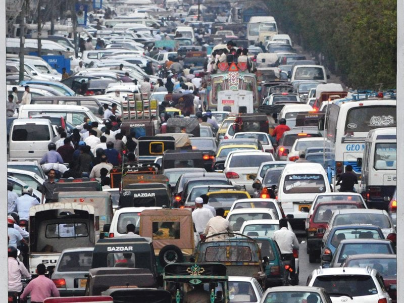
A parent authorises a driver or relative by phone number. No search, no browsable list of children — the search itself would be the leak.
A rotating signed code, checked cryptographically at the gate. Every handover is recorded with who, when and how.
Verification works with no signal, and a manual fallback is always one tap away — logged and reviewed, never blocked.
By phone number only. She picks which of her children he may collect, and can revoke him at any time. The school vets nobody — liability sits with the parent who granted access.
Live location streams to the school while that screen is open — never in the background. The school sees a real ETA instead of a guess.
At about two minutes out, a wall display speaks the children's names. Once per trip — announce repeatedly and everyone stops listening.
A rotating signed code, verified against a cached key with no network. The parent's phone is told the moment her child is released, and who took them.
Set up once. A weekly schedule turns into each day's pickups automatically — the backstop for the days a geofence fires late, which on the phones this market actually uses is most days.
| Design question | The usual answer | Rukhsat |
|---|---|---|
| Finding a driver to authorise | Search a directory of drivers | Exact phone lookup only. A search that returns nothing still confirms whether a child is enrolled. |
| Proving who is at the gate | A static QR or a printed ID card | ES256 code rotating every ~60s. A forwarded screenshot is worthless a minute later. |
| Verifying it | Call the server on every scan | Offline, against a cached public key. The gate cannot depend on signal. |
| When the phone is dead | Turn the family away | Manual handover, logged and flagged. Software is never the reason a child cannot go home. |
| Knowing when they arrive | Background location tracking | Foreground only, on an explicit tap. Plus the driver's own declared time as the backstop. |
| Telling the classroom | Push a teacher thirty times an afternoon | Voice in the room, once per trip. The teacher's hands stay free. |
Codes are signed with the school's private key, which never leaves the server. A guard's device can verify a signature and is useless for creating one — a stolen guard phone cannot mint a code for any child.
A correctly signed code still fails if that person is no longer authorised for that child today. Revocation is per family: one parent removing a driver has no effect on anyone else's children.
A driver sees a name and a photo to make the handover — nothing else about the child or the family is reachable from his account.
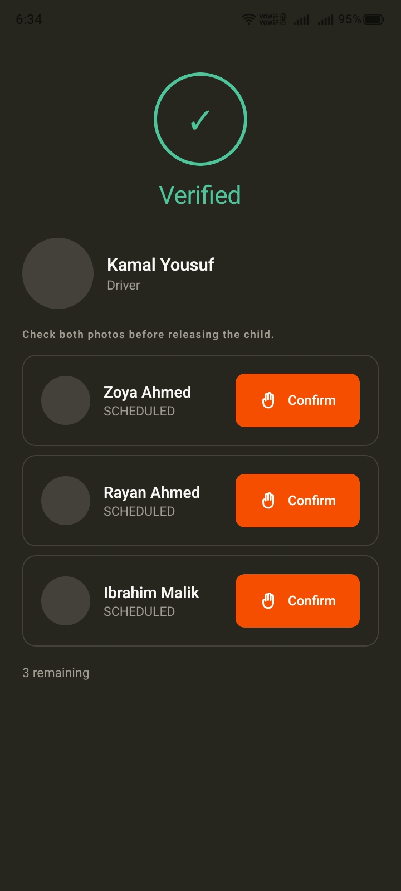
Who released the child, to whom, at what time, and by which method. Manual handovers are flagged for review. This is what a school hands a parent who asks.
The screen still shows both photos and still asks the guard to confirm each child by hand. Software proposes; a person decides — and we did not automate that tap away.
A valid code lists the children and stops. The guard checks each face against each photo and taps Confirm individually — three children is three deliberate decisions, not one.
Children are only brought to the gate when the collector is genuinely close. Until then they stay with their teacher, inside — never waiting at a roadside for someone who is twenty minutes away.
The dashboard shows what is still outstanding, so staff stay on duty until the queue is empty. An unclaimed child at 2pm is visible to the whole school, not to nobody.
An expired or unknown code does not turn a family away. It routes the guard to a manual handover — logged, flagged, reviewed later. A wrong answer from software must cost a review, never a child's way home.
The technology narrows who may collect a child from "anyone at the gate" to "one named, authorised person" — and then hands that answer to a human being to act on.
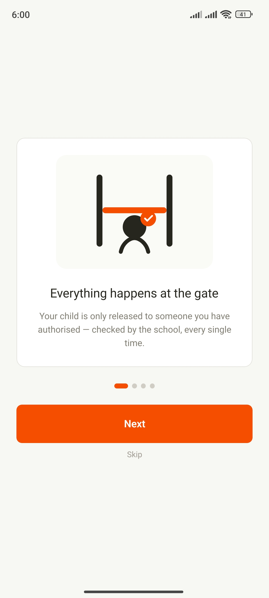
A collector's device displays a signed code. A staff device verifies one. Those are opposite privileges, so they must not ship in one binary where a role flag is all that separates them.
A parent who also drives a van, a teacher who collects her own child — one login each. Four apps would have made those people carry two.
The staff app is a shared, wall-charged gate device that must work with no signal. The collector app is a personal phone. Same code, and neither compromise fits both.
OpenStreetMap instead of Google Maps, our own auth instead of a paid vendor, one 2 GB instance instead of managed everything. For an MVP that must stay up without funding, the riskiest dependency is a bill nobody can pay.
Each of those sits behind an interface. Real users mean paid map and routing APIs, managed Postgres with replicas, object storage for photos, and API instances behind a load balancer — configuration, not new code.
ES256 signing, offline verification at the gate, and the manual fallback are not cost savings — they are the design. They stay exactly as they are on a thousand servers or on one.
Built with Claude Code throughout — both of us worked with it on one repository. It wrote and ran the test suite and caught a live authorisation leak before launch. The architecture, the security model and every product decision here are ours.
The 244 backend tests were written and run with Claude Code as we built, not bolted on at the end — they cover signing, expiry, replay and every authorisation path. One of those runs is what surfaced a live access leak before any real family was on the system. The suite runs on every push through GitHub Actions.
Live now — anyone can sign in with a demo account. Both Android apps install by QR; submitted to Google Play, review in progress.
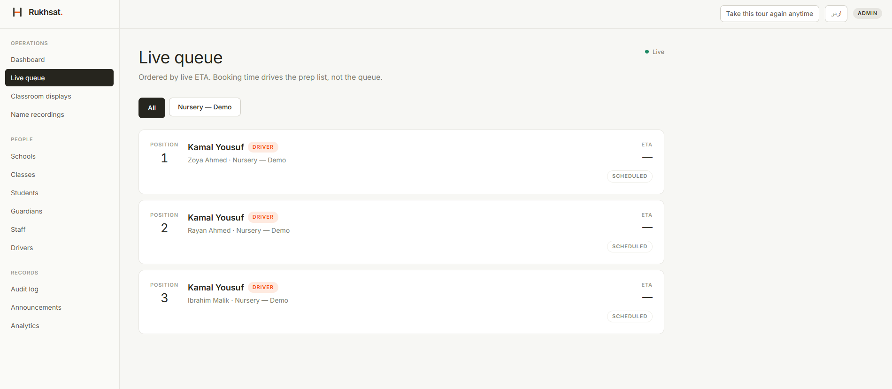
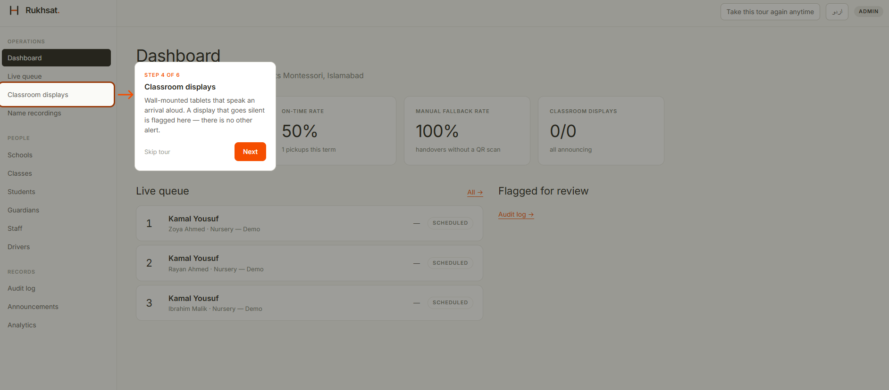
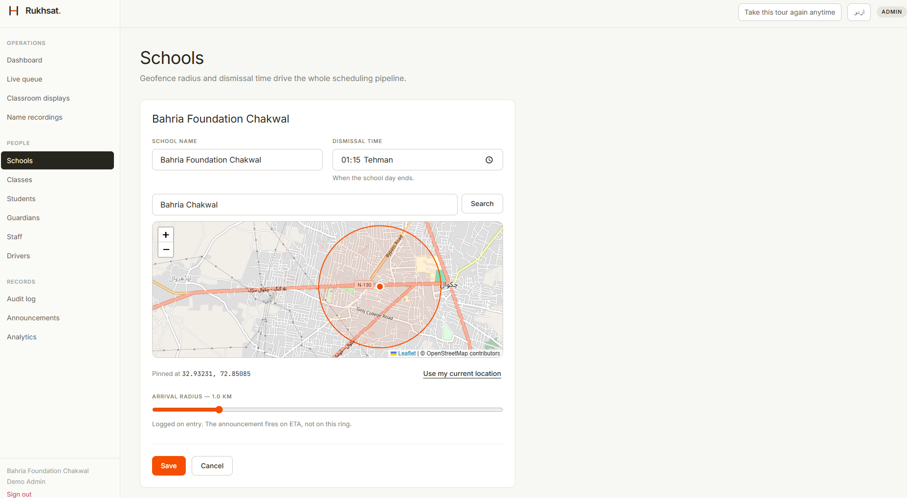
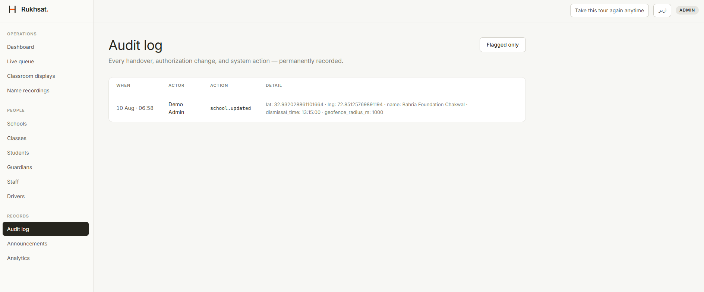
One app for parents, relatives and drivers. Every screen ships in English and اردو from the first commit, not as a later pass.
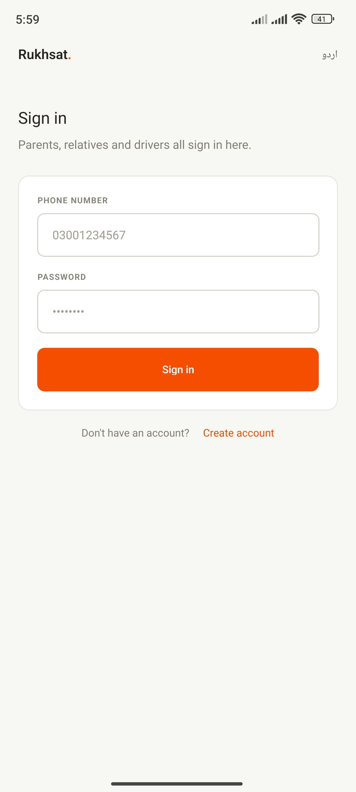
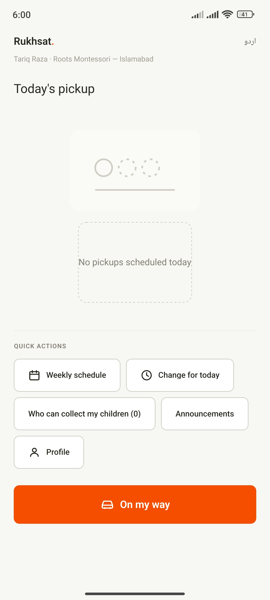
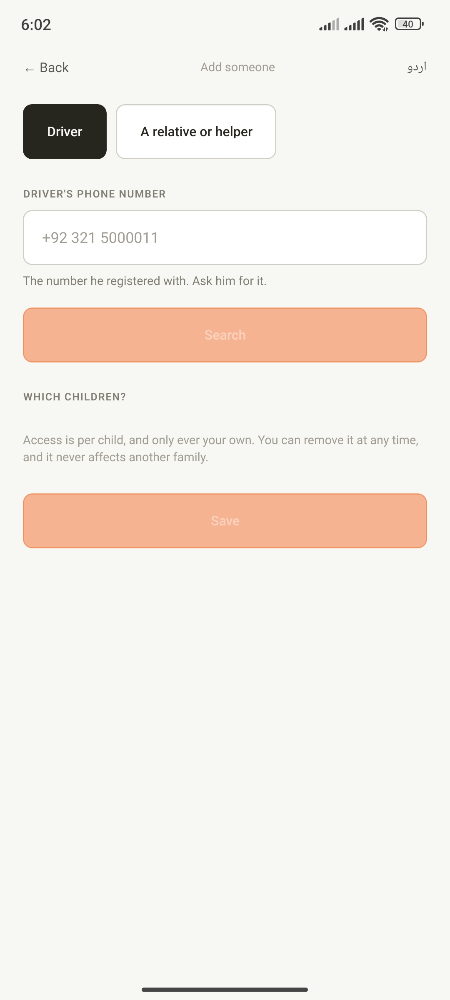
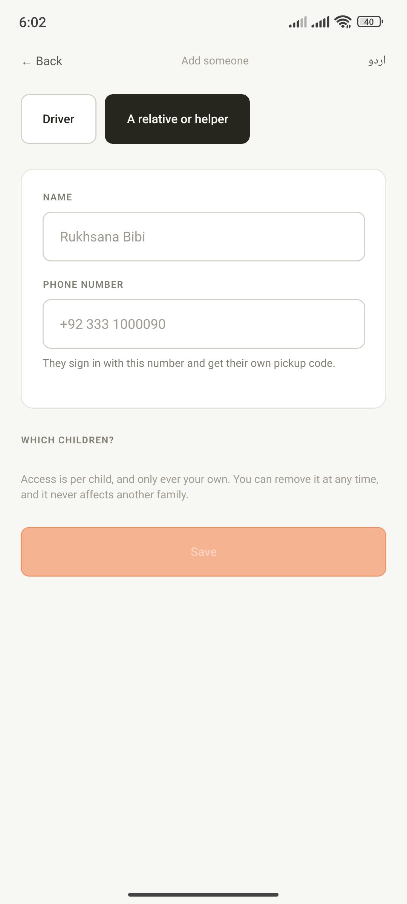
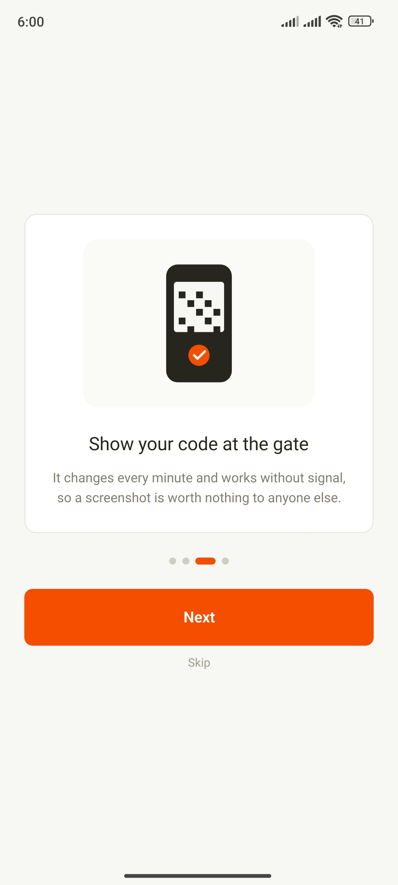
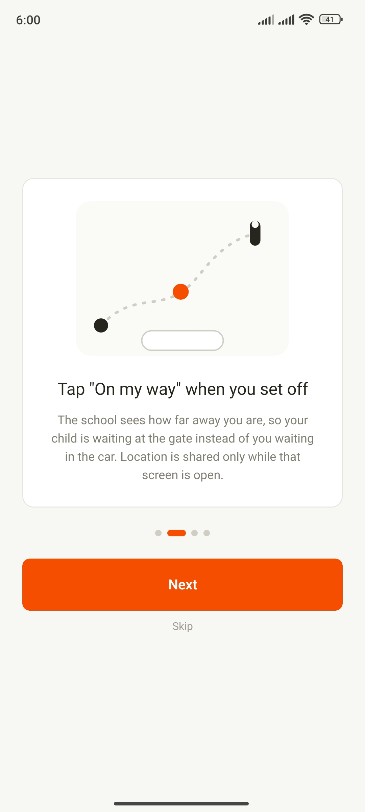
Teacher and guard are two roles behind one login — a guard never sees a teacher’s screens, and neither depends on signal.
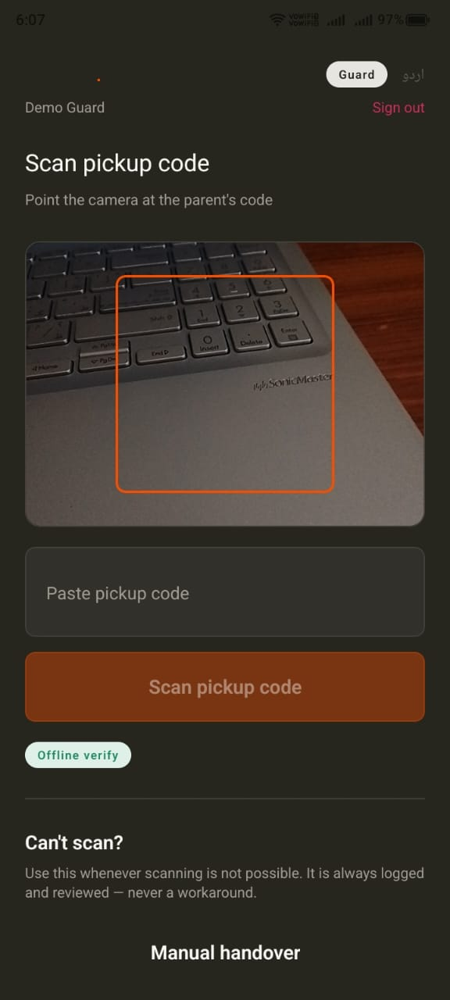
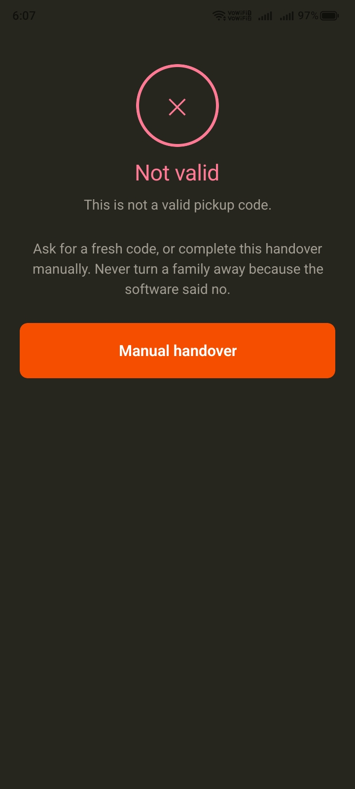
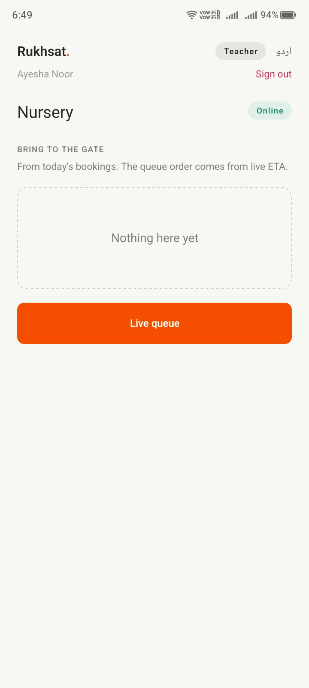
| Role | Phone | Name | Where to sign in |
|---|---|---|---|
| Admin | 03009900001 | Demo Admin | Web dashboard |
| Teacher | 03009900002 | Ayesha Noor | Staff app |
| Guard | 03009900003 | Demo Guard | Staff app |
| Parent 1 | 03009900010 | Bilal Ahmed | Collector app |
| Parent 2 | 03009900011 | Sana Malik | Collector app |
| Driver | 03009900020 | Kamal Yousuf | Collector app |
Password for every one of them: rukhsat123
That is deliberate, not a shortcut. Parents, relatives and drivers are all collectors and share one app; only teachers and guards use the staff app.
One class, Nursery. Three children — Zoya and Rayan Ahmed are siblings; Ibrahim Malik belongs to another family. Kamal Yousuf is authorised for all three, across two families — the case a naive data model cannot express.
This dataset is isolated from the one we test on — a driver in one is invisible in the other.
Backend and infrastructure — FastAPI, PostgreSQL, the ES256 signing and authorisation core, deployment, and the admin dashboard.
System design and mobile — the collector model, both Android apps, offline verification and the gate flows.
Try it yourself — the dashboard is live, and both apps install by QR in under a minute.